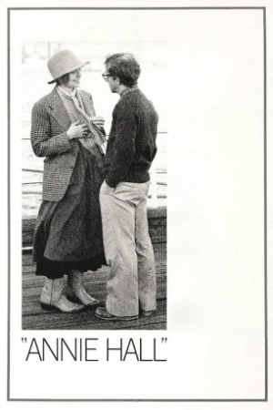

Annie Hall (1977)


A nervous romance.

Country:United States, 93 minutes
Spoken languages:English, German
Genres:Comedy, Drama, Romance
Director(s):Woody Allen
Writer(s):Woody Allen, Marshall Brickman
Video Codec:Unknown
Number: 2552
Tomatometer:

97%

92%
IMDb Rating:


8.0/10 (273.2K votes)
Certification: